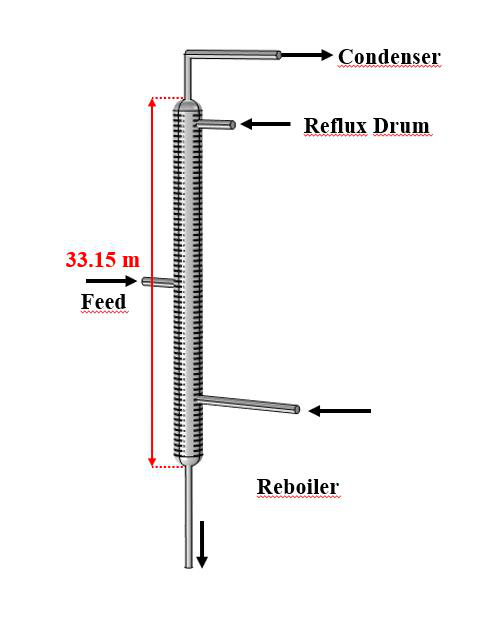
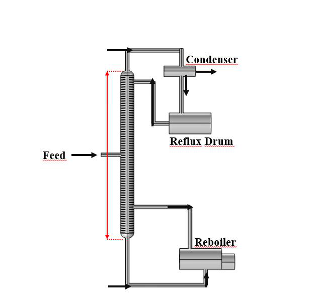

Engineering Design
The column design is based on established distillation principles and rigorous process calculations to ensure reliable separation performance and operational stability.
The sieve tray distillation column is designed for the efficient separation of ethanol–water mixtures through vapor–liquid equilibrium. The column utilizes perforated trays to provide effective contact between ascending vapor and descending liquid, enhancing mass transfer and separation efficiency. Its robust design ensures reliable operation, low maintenance requirements, and suitability for industrial-scale ethanol purification processes. The system can achieve high product purity while maintaining stable performance under varying operating conditions.




(Speight, 2011)
Overview
Designed for reliable ethanol purification, the sieve tray distillation column provides efficient vapor–liquid contact, stable operation, and high separation performance. The system is engineered to achieve consistent product quality while minimizing energy consumption in industrial applications.
The column design is based on established distillation principles and rigorous process calculations to ensure reliable separation performance and operational stability.
Column dimensions are optimized using industry-standard hydraulic design methods to maximize throughput while preventing flooding and operational limitations.
Specifically designed for ethanol–water systems, the process considers vapor–liquid equilibrium characteristics to achieve efficient purification and stable product quality.
Ethanol–Water Distillation Process
Designed for industrial ethanol purification, the distillation system utilizes a proven sieve tray configuration to maximize mass transfer efficiency. Integrated reflux and reboiler systems maintain stable operating conditions while achieving reliable ethanol separation performance.

Process flow configuration illustrating the distillation column, condenser, reflux drum, and reboiler system.
Main Components
The distillation system integrates specialized equipment to provide efficient vapor–liquid separation, stable operation, and reliable ethanol purification.
The primary separation vessel where vapor–liquid equilibrium is established across multiple trays, enabling ethanol enrichment and water removal.
Perforated trays that promote effective vapor–liquid contact, enhancing mass transfer efficiency while maintaining a simple and robust design.
Removes heat from the overhead vapor stream, converting it into liquid product and providing reflux for improved separation efficiency.
Receives condensed liquid from the condenser and distributes it between product withdrawal and reflux return to the column.
Supplies the thermal energy required for distillation by generating vapor at the column bottom and maintaining internal vapor circulation.
Introduces the ethanol–water feed mixture at the appropriate tray location to optimize separation performance and energy utilization.
Design Geometry
The column geometry was developed based on process design calculations and hydraulic requirements. The figures present both the complete column assembly and the internal tray configuration used to achieve the target ethanol separation performance.
The overall geometry illustrates the column structure, feed location, condenser and reboiler connections, and the principal dimensions required for process operation.

Detailed tray-section view showing the optimized column diameter of 1.24 m and tray spacing of 0.45 m, providing adequate vapor–liquid contact and stable hydraulic performance.
Technical Specifications
The main fractionation column is summarized with the following design specifications.
The sieve tray distillation column incorporates design elements intended to improve hydraulic performance, operational reliability, and maintenance accessibility.
Tray geometry promotes even vapor flow across the column cross-section.
Minimizes hydraulic resistance and helps reduce energy demand.
Supports effective vapor–liquid contact for improved separation performance.
Simplified tray construction facilitates inspection and servicing.
Designed to reduce buildup and maintain long-term operating reliability.
Suitable for industrial throughput requirements while maintaining stable operation.
Sieve trays are highlighted as a practical and economical tray solution. Their simple construction and low pressure drop make them well suited for efficient column operation in ethanol-water separation systems.
Effective vapor–liquid contact enhances separation performance.
Consistent hydraulic behavior supports reliable process control.
Low pressure drop contributes to lower energy requirements.
Efficient operation and simplified design help reduce operating expenses.
Durable construction supports extended industrial use.
Sieve trays provide a low-cost alternative for many distillation applications.
Applications
The sieve tray distillation column is widely used across various industries where reliable vapor–liquid separation and product purification are required. Its robust design and cost-effective operation make it suitable for a broad range of continuous distillation processes.
Used for the purification and concentration of ethanol in biofuel and industrial alcohol production facilities.
Applied in the separation and recovery of hydrocarbon mixtures and intermediate process streams.
Supports the purification, recovery, and fractionation of chemical products in continuous manufacturing operations.
Utilized in solvent recovery and purification processes where consistent product quality is essential.
Suitable for alcohol production, ingredient purification, and other separation processes requiring hygienic operation.
Enables the recovery and reuse of valuable solvents, reducing operating costs and environmental impact.
Operating Conditions
| Parameter | Value |
|---|---|
| Feed Temperature | 32 °C |
| Operating Pressure | 1 atm |
| Reflux Ratio | 3.83 |
| Top Temperature | 78 °C |
| Bottom Temperature | 98 °C |
Contact
For technical questions or project enquiries, you can send a message using the form below.